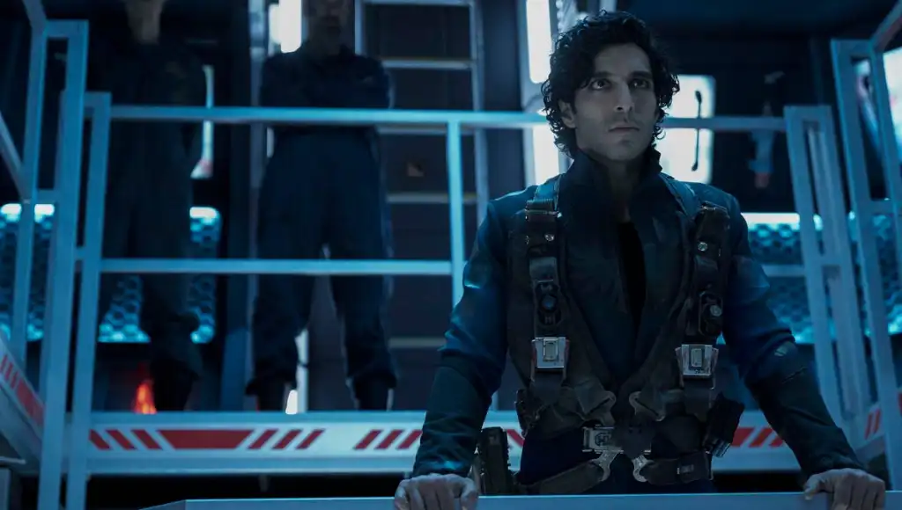
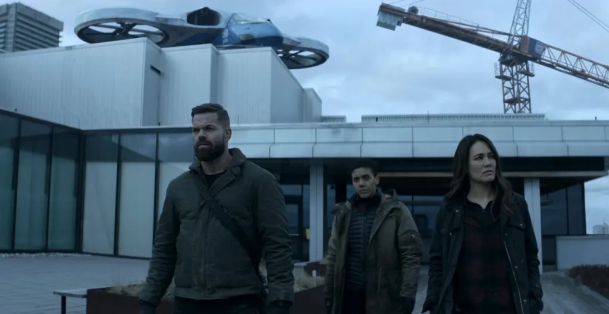
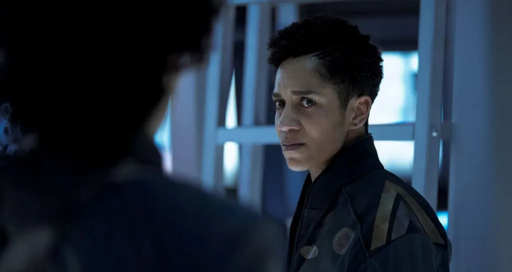

Opinion Writing | 1st in the State for Review Writing, Michigan Interscholastic Press Association
The Expanse Season 5 Review

February 2021 | thecityvoice.org/2021/02/11/the-expanse-season-5-review/
The Expanse is rated TV-14 by IMDB. Episode 4 is now nominated for Best Dramatic Presentation, Short Form at the 2021 Hugo Awards.
Back in December 2020, which, during the ongoing COVID-19 pandemic, seems to me to have been several years ago, the fifth season of the Hugo Award winning series The Expanse premiered on Amazon Prime Video. Normally I would hesitate to review such a late season, and I will be the first to say that if you have time you really should start with Season 1, but Season 5 is the show’s best season yet and without a doubt the best piece of television I’ve watched this school year, so it deserves a review. Even as far back as Season 2, The Expanse had already earned a place as my favorite show on TV, and the book series it’s based on is also excellent and one of my favorite series, but this season reached even loftier heights with stunning visuals, incredible writing, and a plot that is as simultaneously familiar and revolutionary as ever.
So what, you ask, is The Expanse about? It’s about power and war and aliens and the surreal danger and wonder of crossing the void between the stars. It’s about colonization and oppression and injustice and mistakes made long ago. But more importantly it’s about people: fragile, human, people. It’s about realizing that you’re not the most important person in the room and resisting the temptation to fight a crusade of right and wrong because you know it will hurt the people you care about. It’s about wanting the world to make sense and mourning the loss of a way of life you thought unbreakable. It’s about owning up to your mistakes and trying to atone. It’s about wanting to reclaim lost relationships, even when you know you can’t, and questioning what it means to be a good person. It’s about the difficulty of sympathizing with someone who would be easier to hate and about realizing that the people you care for most aren’t who you thought they were.
“You must always have a knife in the darkness.”
It is, in short, about being human, and the script writers seem to know that living is a dramatic enough affair not to be upstaged. The science fiction spectacle of it all is there to create those deeply personal questions for the characters, not to distract from them. At least, so far. As the authors of the book themselves apparently said, “The most dangerous thing in space exploration is the humans that do the exploring — right up until it isn’t.” If recent foreshadowing is anything to go by, there may well be a more alien conflict before the end. But so far it really is about humanity, in this season more than most. The protomolecule, long the inhuman big bad / sardonic quest giver / deus ex machina plot device of The Expanse universe, remains largely quiescent for most of Season 5. The protomolecule sample is still around, and still affecting the story, but it acts mainly as a cipher for the human conflicts boiling up around it rather than taking actions of its own.
The absence of the infamous blue goo doesn’t feel like a loss though, as the human conflicts are certainly dramatic enough to fill ten episodes and more. Lovable, if a bit uncomplicated, Earther captain James Holden teams up with his old frenemy Fred Johnson to investigate the beginnings of a conspiracy on Tycho Station, the unofficial capital of the asteroid belt. They don’t have much help, however, as the other three members of the Rocinante crew have split up, headed to opposite corners of the solar system. Mechanic Amos Burton returns to Baltimore on Earth to settle the affairs of a mysterious woman from his past, and visit an old friend who some might remember from Season 3. Hotshot pilot Alex Kamal returns to his home on Mars to visit his estranged wife and son, but soon teams up with one of his close friends, casually terrifying Force Recon marine Roberta Draper, to unravel yet another conspiracy. If you couldn’t guess, the two are connected.
Finally learning what “there’s a lot of past in my past” meant was an unexpected privilege.
The real star of this season though is Naomi Nagata, the crew’s engineer and the only member of the Rocinante team who calls the asteroid belt home. Returning to the Belt in search of her estranged son, Fillip, while hoping to avoid his abusive father Marco, Naomi faces a truly horrible situation that gives the show’s writers plenty of opportunity to show off their talent for emotionally searing dialogue. I really can’t say more than that without giving away too many spoilers, but I do want to say that I think the most important thing about this season is that Naomi has no doubt as to just how horrible Marco really is. She knows why she fled him the first time, and even as she spends this season tormented by what she gave up to do it, her home, her friends, and her son, she never seems to doubt her decision. There are too many stories featuring heroines who try to reform or hold out hope for villainous romantic partners. Those stories are at best poor writing and at worst they create the idea that abuse is somehow forgivable. This is not one of those stories. Naomi can see exactly who Marco is, even when nobody else around her can. It’s a daring and haunting performance and it treads ground that more stories in this genre should.
Naomi is the real star of Season 5.
While the heavy focus on the personal might seem off brand for the show, last season was about exploring an alien planet, after all, I would argue that this has always been the series’ main theme. The title is, after all, The Expanse, not Belters or Rocinante or Protomolecule. It’s a bit of an odd choice when you think about it, like naming a play The Stage or a painting “Canvas”. But this is a story about scale, and letting the focus fall on the forgotten backdrop reveals the essential conflict of this tale: unlikely individuals against “great men”, people against aliens and systemic prejudice and the other seemingly incomprehensible forces that change lives, humanity, set against the vastness of space itself. But while some, including the story’s major villains, might see that scale as proof that human lives are inconsequential, Daniel Abraham and Ty Franck have taken a different view: that in confronting the incomprehensible and unconquerable we learn something about who we are, and even if we can’t make a ripple on the vast expanse, or even save one small world, the other people who float here with us are all that matter.